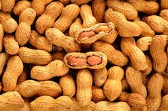

Este municipio basa su economía fundamentalmente en el sector lechero, constituyendo una de las más relevantes cuencas lecheras del país, en virtud de su modernidad y visión de los delicienses. Delicias es el mayor productor de leche bovina del estado con 219.4 millones de litros anuales5 Delicias destaca a nivel nacional e internacional en la fabricación de muebles, es uno de los primeros municipios en esta rama. Otras actividades de la región comprenden el cultivo de nogal, chile, que a la caída del precio del algodón ha solventado la economía del municipio, que además se ve beneficiada por otros cultivos, como el tomate, cebolla, cacahuate, entre otros. A pesar de la corta edad de esta ciudad, Delicias ha sobresalido y destacado como una ciudad moderna, en la cual su economía y su infraestructura evolucionan continuamente.
|  |